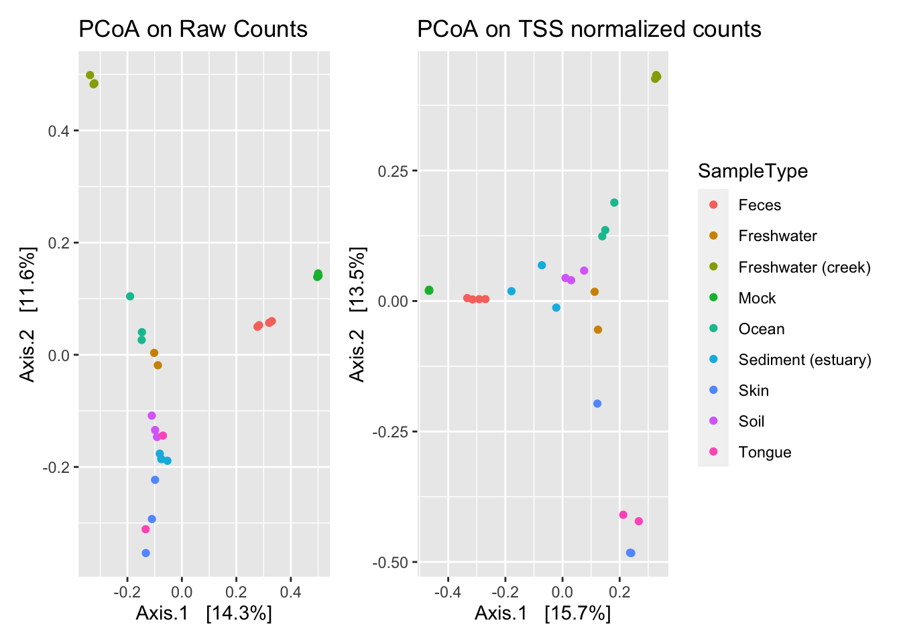
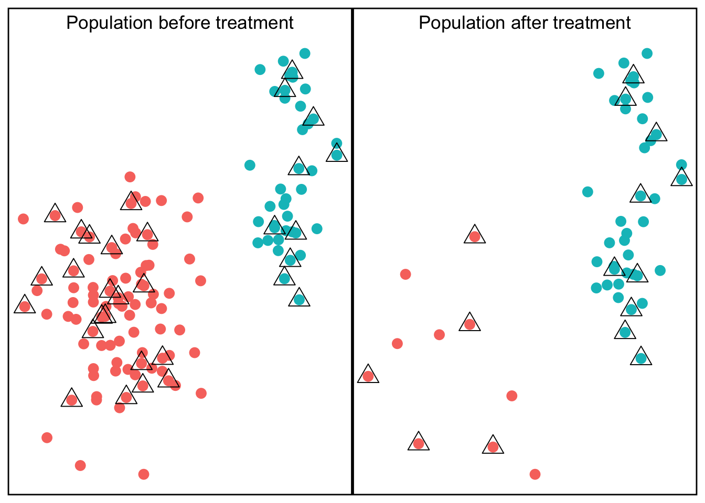

Chapter 3 Total Sum scaling (TSS)
3.1 About TSS
The first method described is Total Sum Scaling (TSS). This method is also referred to as Total Count (TC), converting into proportions, or relative abundance. This is a scaling method to normalize the different library sizes across samples. For every entry in the count matrix, we scale by the total read depth of that sample. This converts the counts into the proportion of abundance present in each given sample.
Though a more straightforward method, TSS normalization is not without its drawbacks. In microbiome data, it is common to have numerous low or zero-count observations, and that only a few most common OTUs contribute to the majority of the total sum of the sampling depth. These high-count, frequent, taxa could be an artifact of the sequencing step, where high abundance observations are preferentially sampled. Using these large counts can dominate the scaling factor for each sample. As seen below, we see that the scaling factor for each sample is completely dominated by ASV1, if that one taxon were not included in the sample, the scaling factor would be widely different.
| Sample | ASV1 | ASV2 | ASV3 | ASV4 | TSS Scaling Factor | Scaling factor w/o ASV1 |
|---|---|---|---|---|---|---|
| Sample A | 10314 | 34 | 8 | 12 | 10368 | 54 |
| Sample B | 824 | 23 | 13 | 20 | 880 | 56 |
Because this method does not account for the preferential sequencing over-abundance of ASV1 it is possible to see an increase in false positives. However, this is a widely used method, and one of the few normalization methods that completely accounts for differing library sizes, which can be an important consideration depending on the analysis goal. Community level-analysis for example can be library-size dependent (ordination, some dissimiliarity measures).
3.2 TSS Implementation
Here, we provide a function that will normalize a phyloseq object by Total Sum Scaling. We have the option of keeping the result as proportions (having values 0-1), or transforming to an equal sequencing depth so the results are counts per million.
3.3 TSS on Global Patterns
Using the above function, we apply this normalization to the Global Patterns data.
gp_tss <- norm_TSS(gp_raw)
# rename the depth as the scaling factor
sample_data(gp_tss)$scaling_factor <- sample_data(gp_tss)$depthTo see the differences between the un-normalized, raw data, and the TSS transformed normalized data, one possible way is to look at ordination plots. Microbiome data are high dimensional, so visualization directly of the data is difficult. Here, let us examine the principal coordinates plot using the Bray-Curtis dissimilarity.
First calculate the distance matrices, using the phyloseq function ordinate()
gp_raw_dist <- phyloseq::ordinate(gp_raw, "PCoA", "bray")
gp_tss_dist <- phyloseq::ordinate(gp_tss, "PCoA", "bray")Now plot the two ordinations. Even before normalization, the different communities are clearly clustered.
(Note to self: perhaps choose a different dataset to use for walk-through, currently using Global Patterns since it is small and quick for computations, but harder to see differences.)
plot_ordination(gp_raw, gp_raw_dist, color = "SampleType",
title = "PCoA on Raw Counts") +
plot_ordination(gp_tss, gp_tss_dist, color = "SampleType",
title = "PCoA on TSS normalized counts") +
plot_layout(guides = 'collect')
We can also compare the values of the distance matrices before and after normalization to see how the normalization method is impacting different types of points.
# Function to visualize potential differences and changes after normalization methods
plot_norm_changes <- function(data_norm, data_raw, dist_method = "bray", x_lab = "raw", y_lab = "norm", title = "Plot title"){
# calculate the Bray-Cutris distance matrix for the raw data, the normalized data,
# and calculate the pairwise difference between the original library sizes between samples
plot <- data.frame(raw = as.numeric(phyloseq::distance(data_raw, dist_method)),
norm = as.numeric(phyloseq::distance(data_norm, dist_method)),
diff = as.numeric(dist(get_variable(data_raw, "depth")))) %>%
ggplot(aes(x = raw, y = norm, color = diff)) +
geom_point() +
geom_abline() +
ggtitle(title) +
xlab(x_lab) + ylab(y_lab) +
labs(color = "Pairwise difference in sampling depth")+
xlim(c(0,1)) + ylim(c(0,1))
return(plot)
}
plot_norm_changes(gp_tss, gp_raw,
x_lab = "Raw counts", y_lab = "TSS props",
title = "Distance metric comparision between Raw counts and TSS normalized counts ")
Points below the line are pairs of samples that are marked as more similar after normalization. Points above the line are marked as more different after normalization. Values closer to 1 are ‘more different’. Unsurprisingly, pairs that had larger original differences in sampling depth were marked as more different on the raw, un-normalized data, and became marked as more similar after TSS normalization.